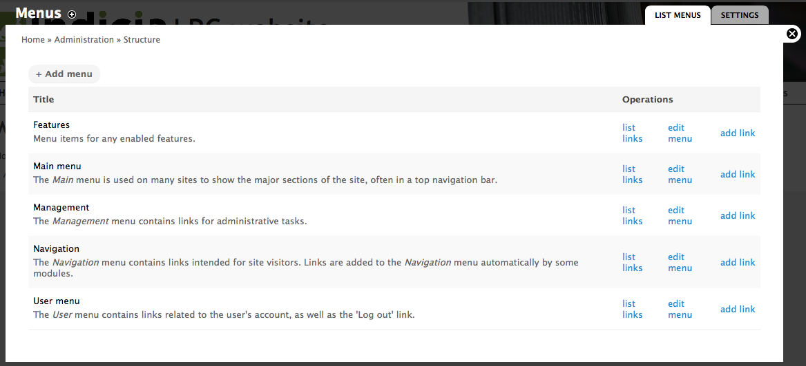
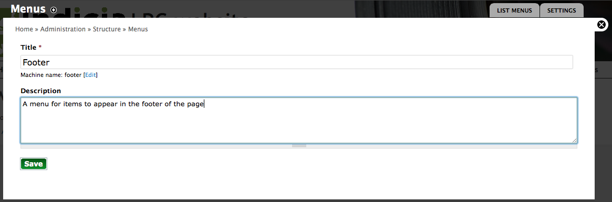
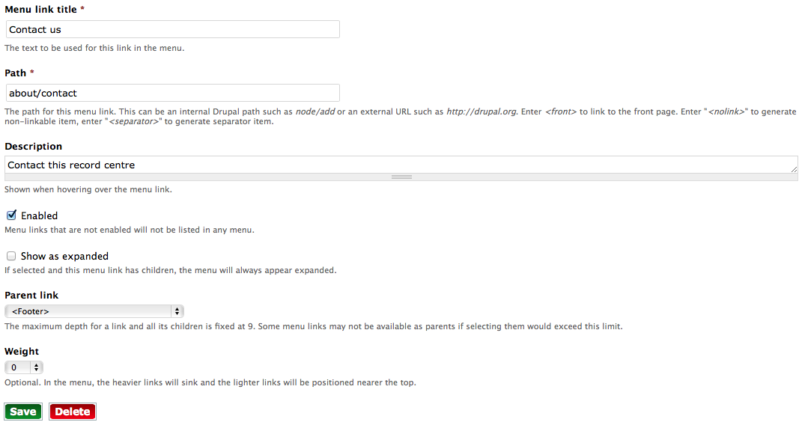

We’ve already encountered the Drupal menu system a couple of times so far in this documentation. Let’s take a look in more detail and pick up a few tips on the way.
Drupal’s menus each consist of a hierarchy of links to various pages on the site. There can be any number of menus in a Drupal site and you have already seen the main menu and user menu running on your template site. Menu’s can be rendered onto the page as a pretty simple HTML list by Drupal, or you can write code or (more likey) install a module which outputs the menu in any way you see fit. Our site already has one such module installed, Superfish, which converts our simple menu hierarchies into nice drop down menus which remain accessible and work well across devices. It’s the Superfish module which lets the menu drop down when you hover on the About this record centre menu item, for example. We also use another module, Special menu items, to allow menu items which don’t actually link to a page such as the menu headers over each sub-menu.
To review the menus available on your site, click the Structure link in the admin toolbar then click the Menus link. This takes you to a page listing the available menus:
There are a few menus here, some created by the Drupal core, some by modules added to our site. We’re only using the Main menu and User menu on our site at the moment. Click the list links link by the Main menu to view the links for our menu. This page shows the complete layout of our menu and provides handy drag-handles so that you can re-order menu items and even move them between different menus.
Have a practice moving menu items around and remember to click the Save configuration button if you want to save your changes.
As Drupal allows any number of different menus, let’s create a menu to appear on our page footer. Return to the page listing the menus (use the site breadcrumb trail, or click Structure then Menus again). This time, click the Add menu button. The menu settings popup which appears is pretty simple, so fill it in to describe your menu. There is no need to worry to much about exactly what you specify here as it is just information for site administrators and won’t be shown to the public. Click the Save button when done.
After saving the menu settings, Drupal takes you to the currently empty list of links so click the Add Link button to start populating our menu. Add a link to the existing Contact us page by filling in the following settings:
Leave the other settings as they are.
Save the page. Your footer menu has now been created and has a link in it, but if you visit your home page you will find that it does not appear anywhere. That’s because Drupal can’t make assumptions about where to put things based on the fact that we called it “footer”, we have to explicitly tell it where to put the menu. Time to learn about another aspect of Drupal - blocks!
Enter search terms or a module, class or function name.